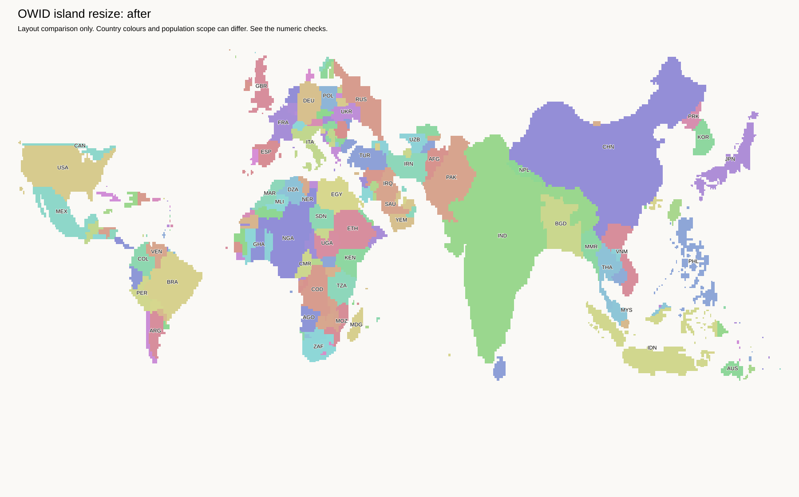

Research trial. No default map or H3-MON export changed.
Combine the original OWID parts of Borneo, then scale the whole outline from 286 to 166 tiles. Keep that outline fixed while fitting the internal borders. Malaysia has 44 tiles, Indonesia 118, and Brunei 4. These counts match the previous trial.
Brunei can move with the scaled island. It no longer forms a projection beyond the outline. Each country part remains connected. All existing land contacts and protected water remain unchanged. The peninsula and the Philippine island movements are unchanged from the previous trial.
The outline follows the OWID artwork, not a new geographic coastline. Grid rounding changes small details. The Malaysian strip is narrow because its tile count is much smaller. Automatic population identities still need review.
Fit record · Full report · Population groups · Land tiles · OWID-format layout · Previous trial and source assignments
